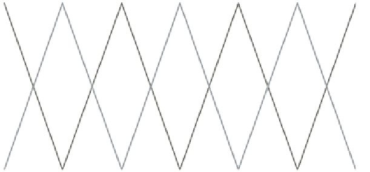
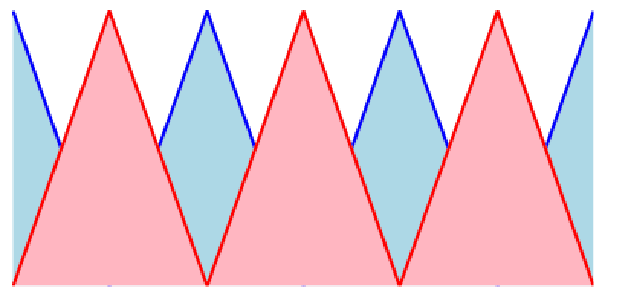
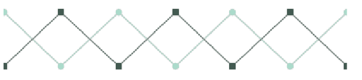
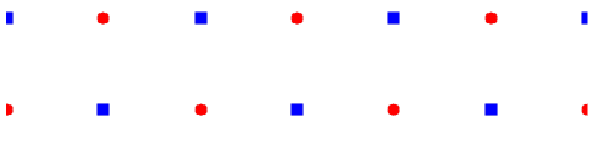
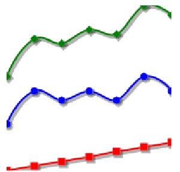
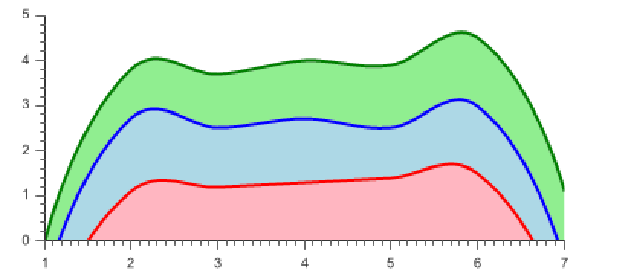
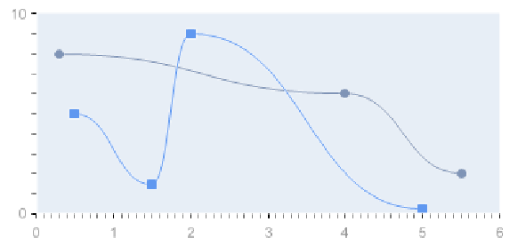

4.3.1 Plot2D
This class is used to draw several types of two dimensional plots.
4.3.1.1 What type of data to use?
This type of plot can be used with series of anything which extends Number, or with
the Point object. When using numbers, the X coordinate is the position of the
number in the list. When using Points, both X and Y coordinates must be
specified.
Ex :
Serie<Point> serie1 =
new Serie<Point>();
serie1.addData(
new Point(3.,2.));
4.3.1.2 Subtypes
The plot type is determined with the constructor:
public Plot2D(String type) ;
Where type is one of the following constants :
-
Plot2D.PLOT_TYPE_LINES
- Series are drawn as lines Ex:
-

-
-
Plot2D.PLOT_TYPE_AREAS
- Series are drawn as lines, and the area
under lines is filled. Ex :
-

-
-
Plot2D.PLOT_TYPE_MARKERS_LINES
- Series are drawn as lines,
with markers on the actual points Ex:
-

-
-
Plot2D.PLOT_TYPE_SCATTER
- Series are drawn as points only Ex:
-

-
-
Plot2D.PLOT_TYPE_LINES_STACKED
- Series are drawn as lines
and the y positions are additive. Ex:
-

-
-
Plot2D.PLOT_TYPE_AREAS_STACKED
- Series are drawn as lines,
the area beneath is filled and the y positions are additive. Ex:
-

-
4.3.1.3 Specific options
-
Tension:
- It allows you to add some curve to the lines
public void setTension(String tension);
Example with tension = 2 :
Plot2D plot =
new Plot2D(Plot2D.PLOT_TYPE_MARKERS_LINES);
plot.setTension("2");
-

-
-
Shadow:
-
/** * Creates a shadow *bubbles * @param width : the shadow’s width * @param dx : shadow’s x position from the line * @param dy : shadow’s y position from the line */ public void setShadow(
int width,
int dx,
int dy);
Example :
Plot2D<Double> plot =
new Plot2D<Double>(Plot2D.PLOT_TYPE_LINES_STACKED);
plot.setShadow(2, 2, 2);
-
-
-
ShowMarkers:
-
/** * @param show : Set wether to show the markers or not. * Overrides the default "PLOT_TYPE" behavior. */ public void setShowMarkers(
boolean show);
-
ShowLines:
-
/** * @param show : Set wether to show the markers or not. * Overrides the default "PLOT_TYPE" behavior. */ public void setShowLines(
boolean show);